Event can occur
The current tension, timing and context allow the event to contribute to the intended experience.
What if horror events didn't simply happen randomly, but asked permission?
Unreliable Reality is a reusable horror system built around tension, controlled unpredictability and environmental manipulation. Individual objects can request permission to perform unsettling actions, while a central Horror Director evaluates whether the current moment is right.
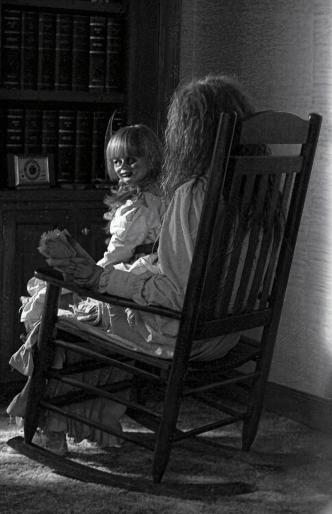
The project explores the discomfort of objects that appear normal, until the player can no longer be certain that they are.
Horror often relies on carefully timed events: a light turns off, an object moves, a sound plays, or something appears where it shouldn't be.
But I wanted to explore what would happen if those events were treated as requests inside a larger system, rather than isolated scripted scares.
Design Question:
Can a reusable system create the feeling of an unpredictable environment while still giving the designer control over when, why and how often horror events occur?
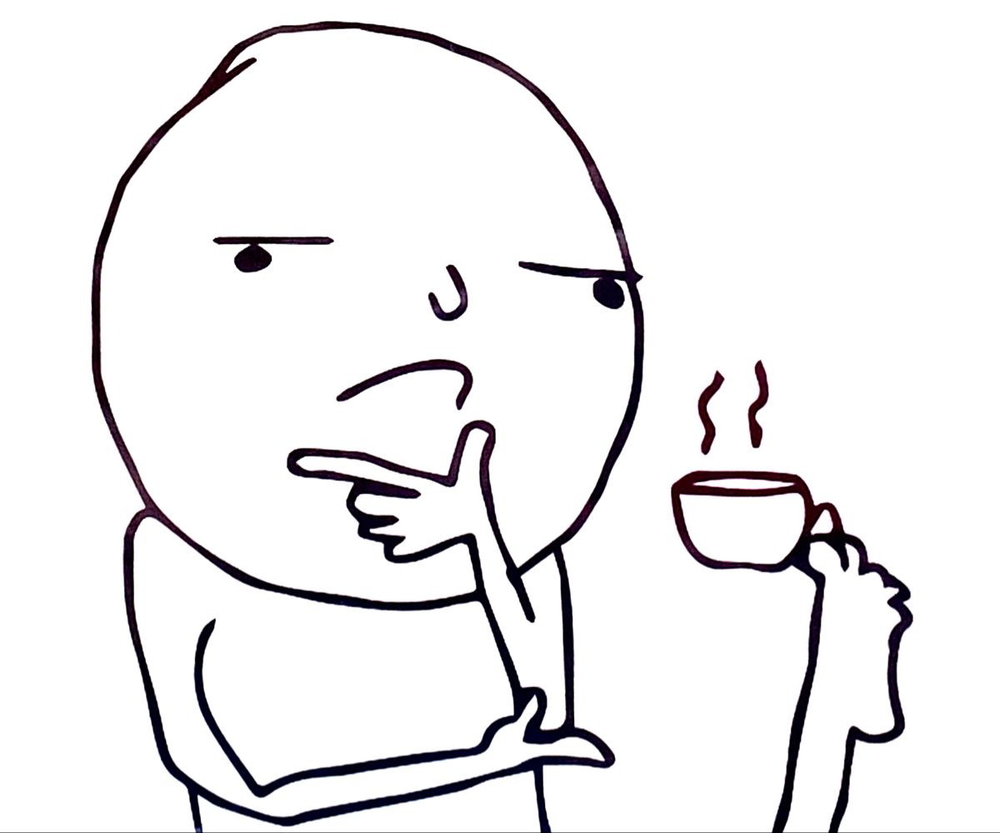
Pure randomness is easy to implement, but it does not necessarily create good horror.
If something strange happens every few seconds, the player quickly learns that the environment is simply performing random tricks. The uncertainty disappears.
Events always happen at the same moments, allowing the player to anticipate them.
Events happen without considering what the player has recently experienced.
Events should feel unpredictable to the player, while remaining controllable to the designer.
Predictable System → Unpredictable Experience
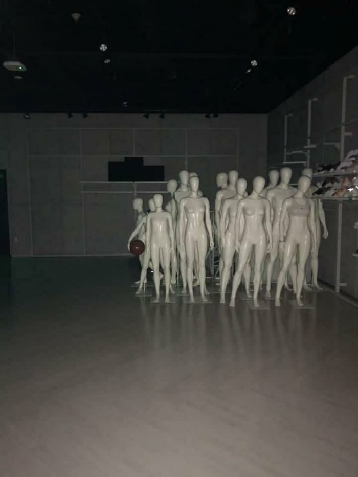
At the centre of the system is a Horror Director. It acts as the mediator between the game world and individual unreliable objects.
An object does not simply decide: "I am going to scare the player now."
Instead, it submits a request.
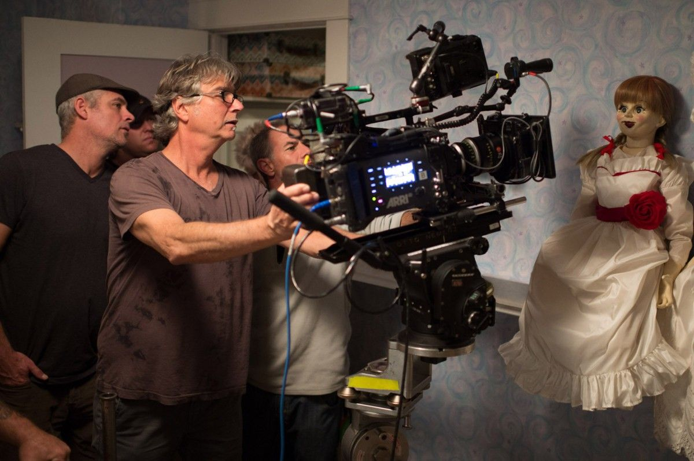
The Horror Director maintains a dynamic tension value that changes as the player experiences the environment.
Events can increase or decrease tension, allowing the system to create periods of pressure followed by moments of release.
The value is not intended to represent a literal measurement of how scared the player is. It is a designer-facing control signal that helps determine how much pressure the system should currently be applying.
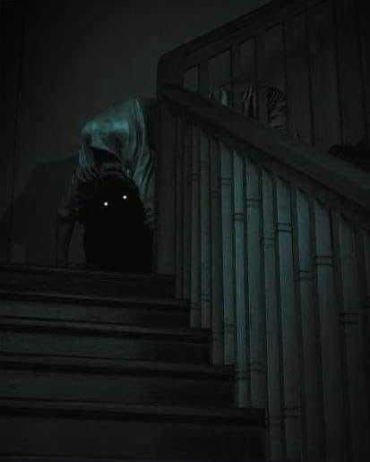
Each unreliable object has its own possible behaviours, but does not need to understand the entire horror system.
This separation allows the same director to control many different types of environmental anomalies.
Player leaves the room and the object becomes eligible to request a visual alteration.
CHANGE_APPEARANCE
The object owns the possibility.
The director owns the timing.
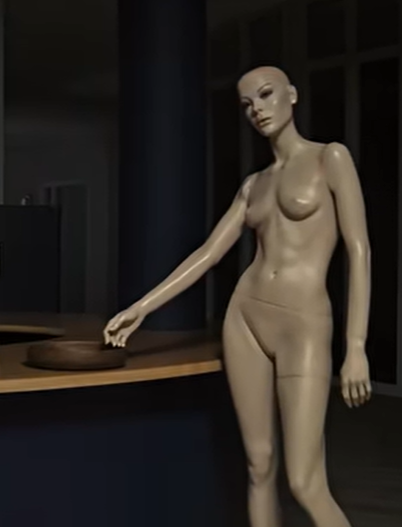
A request is evaluated against the current state of the game. This prevents every eligible object from triggering simultaneously and allows the system to maintain pacing.
The current tension, timing and context allow the event to contribute to the intended experience.
The request is rejected because the timing would create too much pressure, repeat an event too quickly, or simply be less effective.
Importantly, denial is invisible to the player. They simply experience a world in which sometimes nothing happens.
That absence is part of the system.
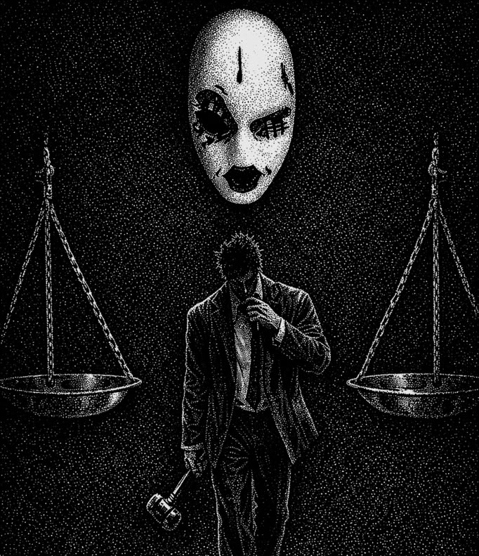
The system is designed so that new unreliable objects can be created without rebuilding the underlying tension logic.
Can change its appearance when the player isn't observing it.
Can request a change in position or orientation.
Can request flickering, interruption or altered behaviour.
Can request a state change when the player returns.
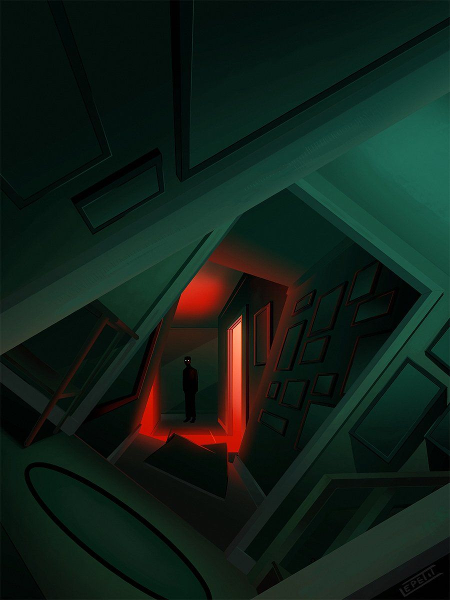
The goal is to keep individual horror behaviours decoupled from the global tension logic.
New unreliable objects can therefore become clients of the same system without requiring the Horror Director itself to be rewritten.
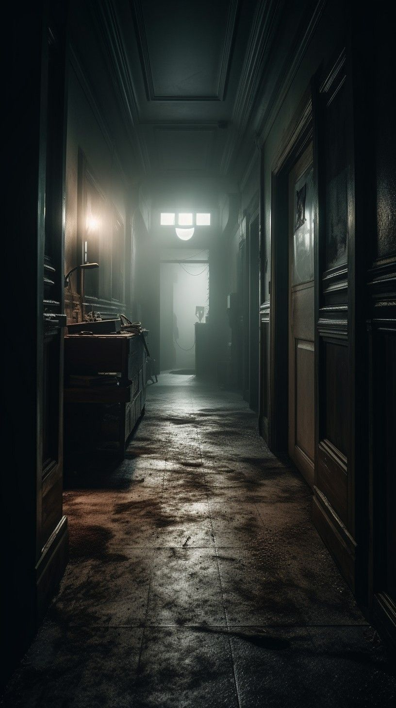
A major part of the experiment is making the system observable during development.
Horror systems can become difficult to tune when the designer cannot understand why something happened. The debug layer exposes the hidden decision-making process.
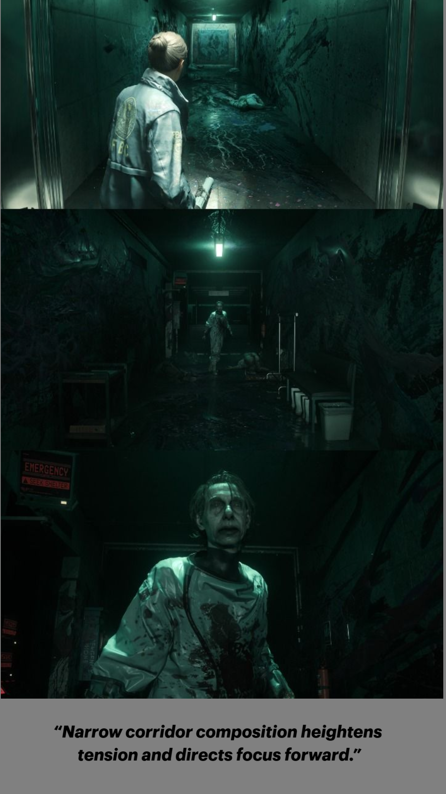
The interesting part of the system isn't that an object can move or change.
Those individual effects are relatively simple.
The difficult question is:
"When should the game allow the player to notice?"
That question pushed the project beyond creating individual scares and into designing the rules governing when horror is allowed to happen.
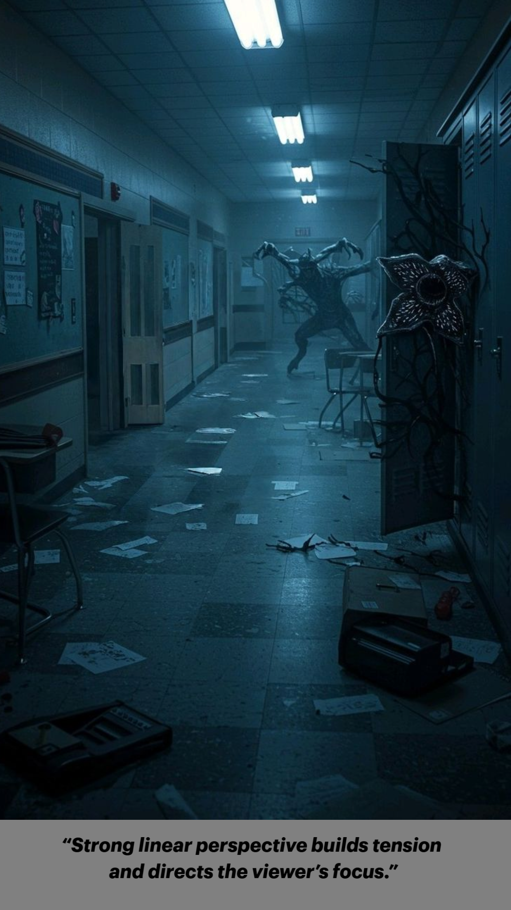